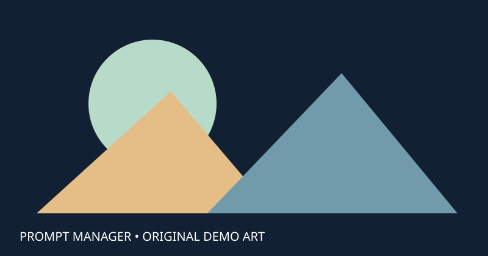

仅供软件展示，不是真实模型。同名 .safetensors 文件是纯文字占位文件，不能在 ComfyUI 中加载。本页不是任何第三方模型的说明或截图。

此页面展示如何把 LoRA 模型文件与 HTML 使用说明放在同一层，并在软件中识别相应的 Prompt 记录。
translucent geometric garden, soft daylight
示例模型名称：demo_glass_garden。文件名放在 Complex LoRA Tag 中，用于演示自动关联。
同层的 demo_glass_garden_files 文件夹保存这幅几何插图。导出 ZIP 时应连同 HTML 一起保留。